Italy is a beautiful and varied land. I've travelled it from north to south, many times. These photographs are from my visit to Venice in January and February 2006. Thanks to Antonino.
Accademia bridge, Venice
A bridge over the beautiful Canal Grande, with a great view of Campo San Marco. I found it especially good for night shots.

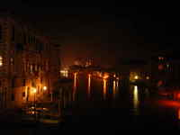

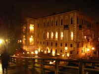

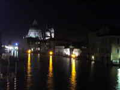
The alps
The alps are a range of very high mountains. You can tell, from the effect of perspective as the mountain peaks zip past, and from the occasional scraping sound from the belly of the plane — and I'm sure I once saw a man in crampons jump on the wing at one mountain peak, and hop off at the next.

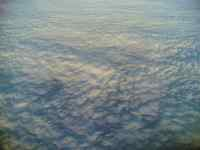

.jpg){kind=link}


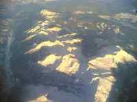

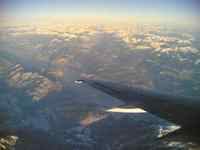

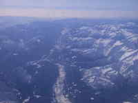

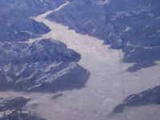

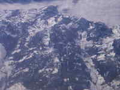

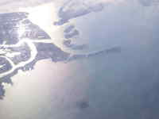


h2(#canal-grande).Canal Grande
Canal Grande is the main street in Venice. It puts the ‘picture’
in ‘picturesque’
. Well actually, all of Venice does. It's quite incredible, you know.

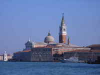


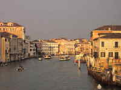

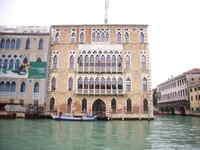

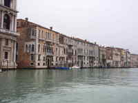

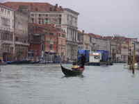

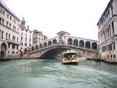

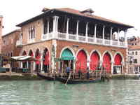
View from my window
While in Venice, I stayed in a beautiful top-floor flat overlooking a lagoon, on the island of Giudecca. One wall was completely windows and the view was a constant source of joy.

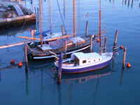

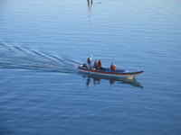

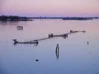

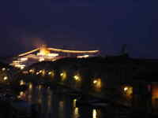

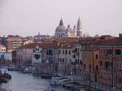

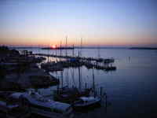

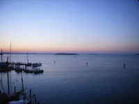

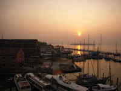
Milan
I like Milan very much (btw it has excellent salsa). The first call for designs for a central train station (Milano Stazione Centrale) went out in 1906; the completed building was inaugurated in 1931. For me, it's a successful mix of fascist grandeur and art deco good taste — it's so big, I couldn't get it all in one shot, even at some considerable distance. The interior is also very pleasant.
Watch out — the ticket halls are down a very long flight of steps from the actual trains. Try dashing up and down that with a suitcase. Fortunately, the trains were in my experience always late, and I didn't miss even one of them.


Campo San Marco
Campo San Marco is the main square in Venice. It also forms the focal point of the Venice carnival. The buildings aren't bad either.

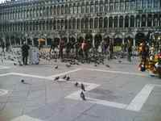

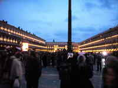

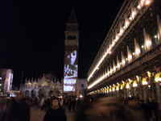

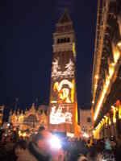

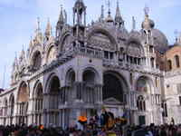

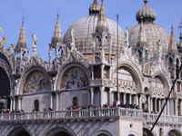

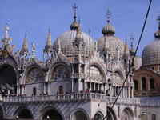

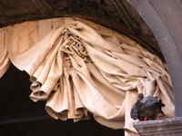

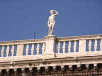

Bricks (Venice)
Venice is full of the most terribly interesting bricks! It's so bricky!!!

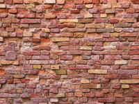

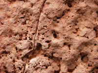

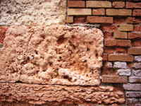

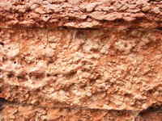

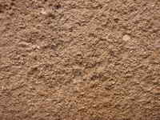

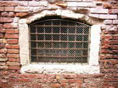

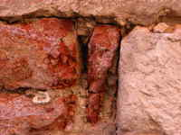

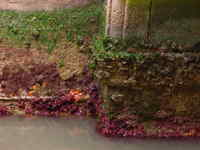

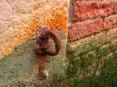
The Venice Carnival
A week of carnival ... a thousand photos. Ambient light was often low so for the record, this stuff was not easy to shoot.
I started off cynical about tourist traps — and certainly that element is there — but the creativity is palpable as the streets fill with people from all over the world in costumes which must have taken a full year to design and prepare. By night they go to costume balls costing sometimes a thousand dollars per entry ticket (so I'm told). This is not dressing up; this is a way of life.

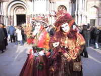

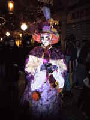

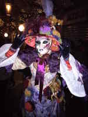

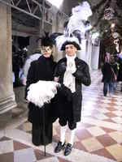

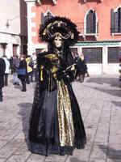


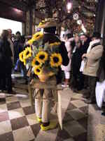

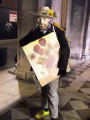


Venice (streetscapes)
In Venice, each bend in the street brings a banquet of images ...


Bari
From north to south the variation in Italy is very great. I was in Bari during the world cup. During the game the streets were dead silent and yet the tension fairly crackled like lighting from the roofs. When the Italian side scored, the noise (coming from every window of every building) was fantastic.